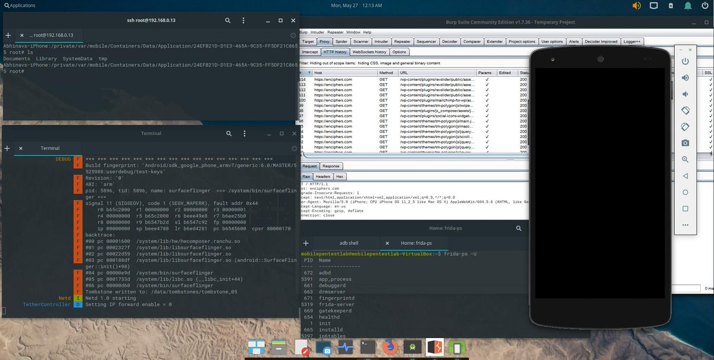

MOBEXLER - A Mobile Application Penetration Testing Platform
Mobexler is a customised virtual machine, based on Elementary OS , designed to help in penetration testing of Android & iOS applications. Mobexler comes preinstalled with various open source tools, scripts, prerequisites etc. which are needed for security testing Android & iOS application.

Mobexler is unique for several reasons:
-
One platform capable of managing Android Device/emulator and iOS devices, both at the same time.
-
Comes preinstalled with various updated tools which are needed for security testing.
-
Tools like MobSF are run inside a docker container, which ensures that it is easier to download the newer versions.
-
Running MobSF in container also gives capability to perform static analysis on IPA, which otherwise requires Xcode tools.
-
iOS devices can easily be connected through USB and various tools can be used to perform the testing, like Frida, Objection, Hopper etc.
-
Free for everyone to use.
Default Configuration
- OVA file size: ~16GB
- RAM: 4GB
- Disk Space: ~35GB
List of tools
Android Zone
- Android Studio
- Burp Suite Proxy (Community Edition)
- Bytecode Viewer
- DB Browser for SQLite
- Frida
- JADX-GUI
- JDGUI
- Logcat - Pidcat
- MobSF
- AVD - Emulator
- Androbugs
- Dex2Jar
- Pidcat
- SUPER-Analyzer
- Wireshark
- Smali & baksmali
- Mara Framework
- SIGN
- Android Backup Extractor
- Tcpdump
- Objection
- Drozer
- radare2
- Ghidra
iOS Zone
- Frida
- Cydia Impactor
- Filezilla
- Putty
- Objection
- Hopper Disassembler
- MobSF
General Penetration Testing Tools
- Metasploit
- Sqlmap
- Nmap
- Sslscan
- Ghidra
Some Screenshots:

